70 минут
70 минутПАТТАЙЯ / ИВАНОВО
Массаж
в Иванове.
От знакомого ойл-массажа до локальных сеансов для спины, ног и лица. Выберите формат — время и детали обсудим лично.
16 программот 2 200 ₽Батурина, 23
 70 минутот 60 минут
70 минутот 60 минут от 30 минут
от 30 минут 90 минут
90 минут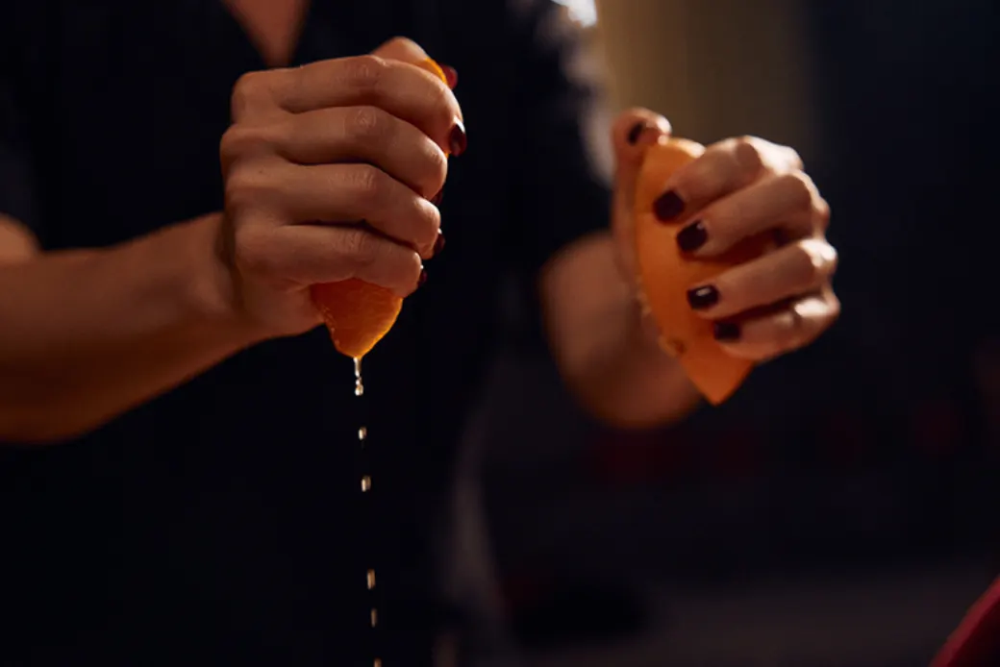
70 минут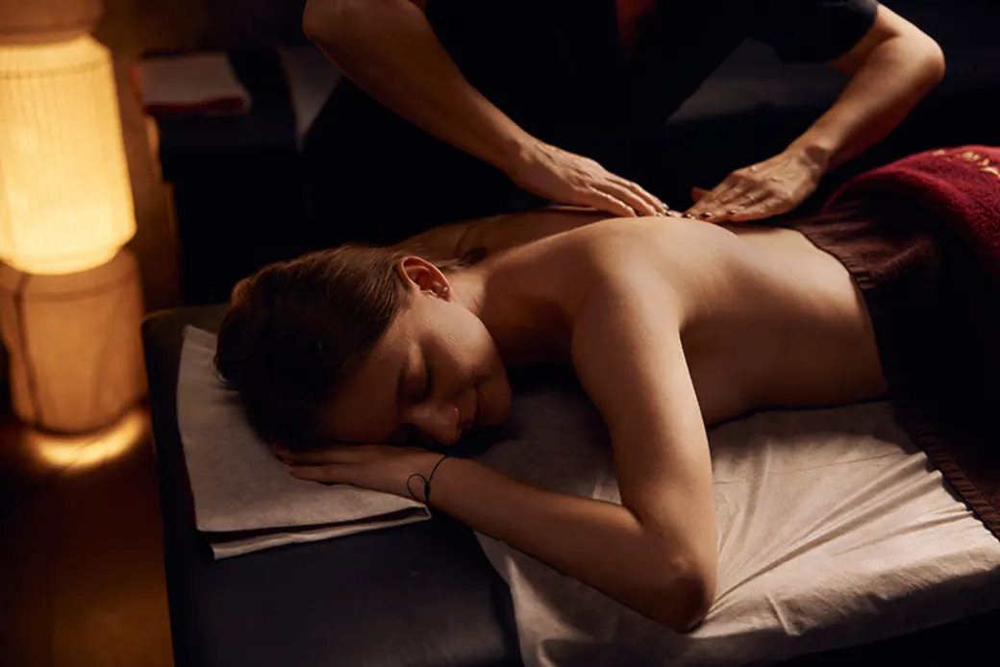
от 60 минут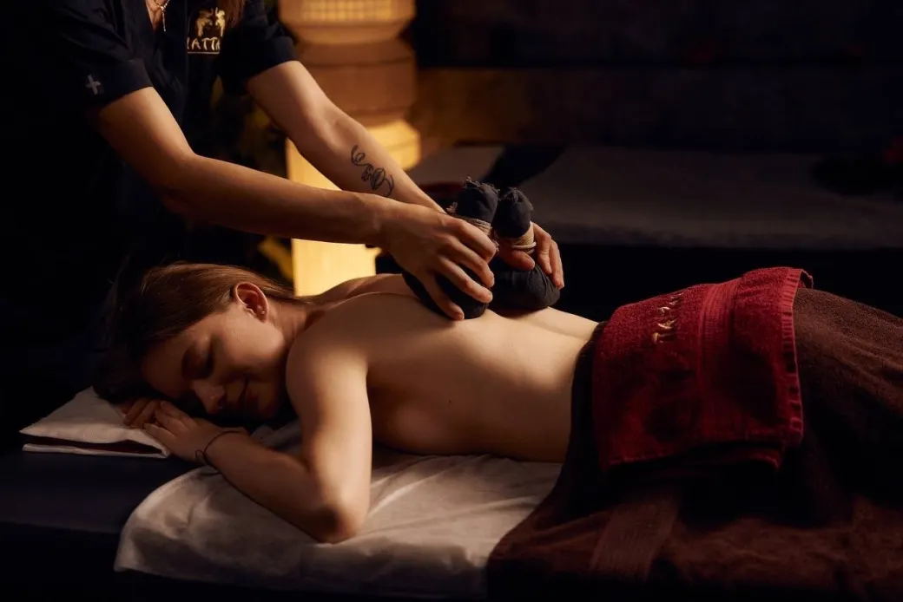
60 минут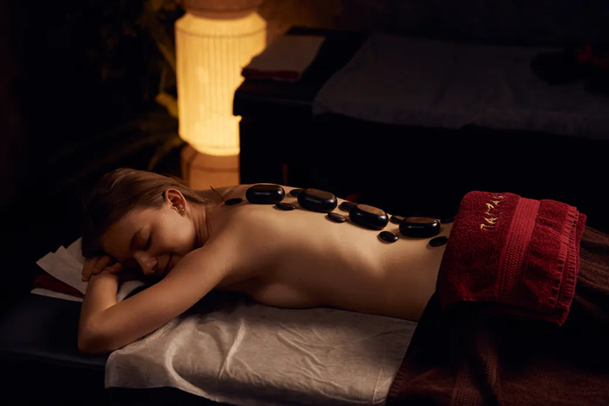
60 минут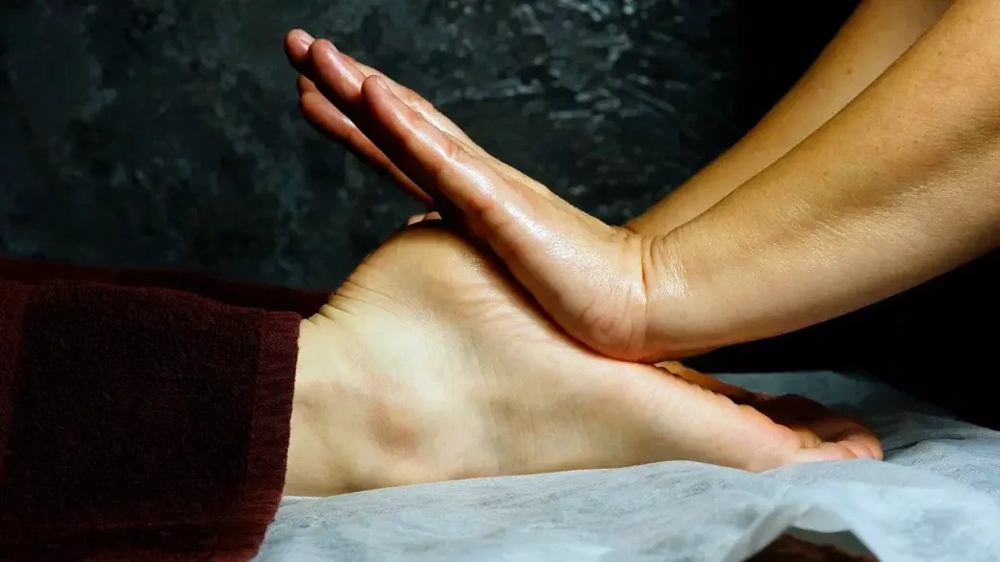
от 30 минут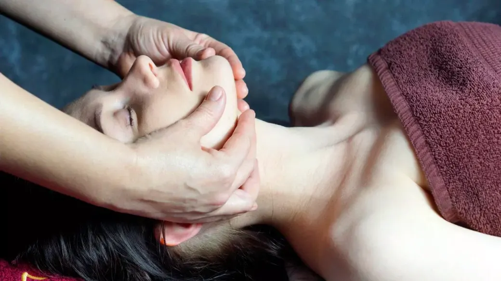
30 минут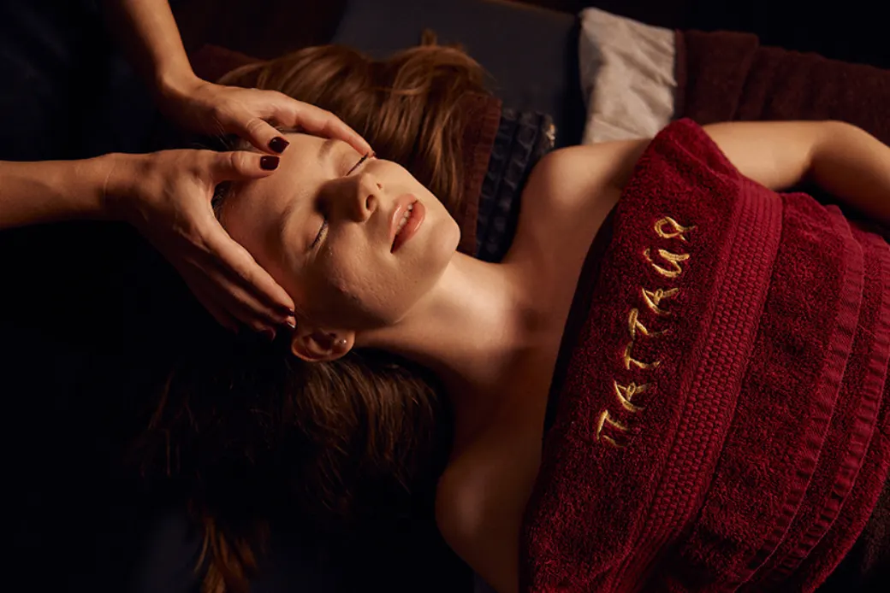
30 минут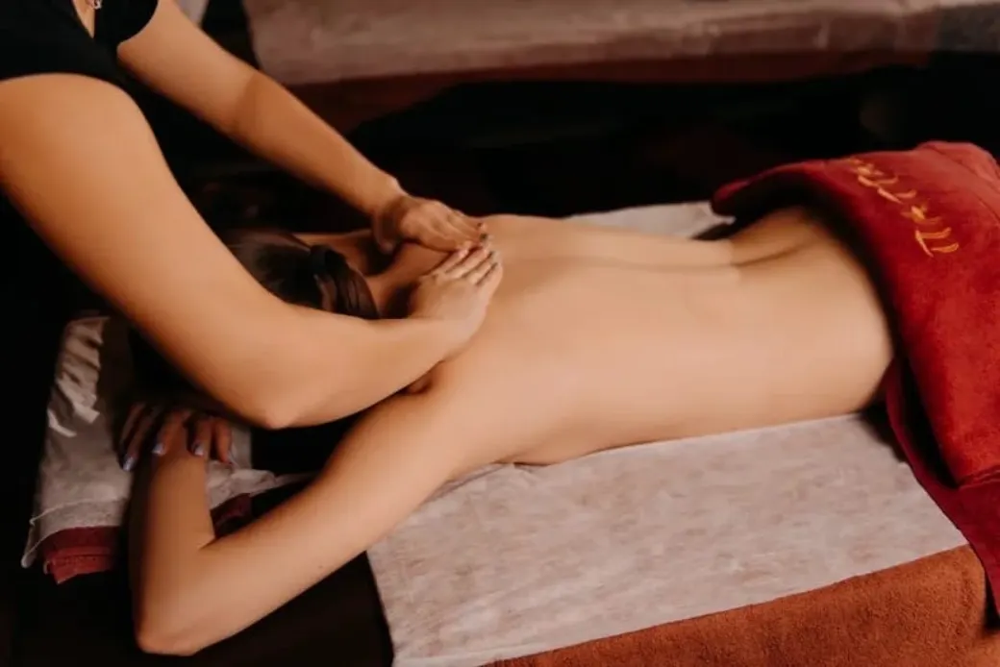
от 30 минут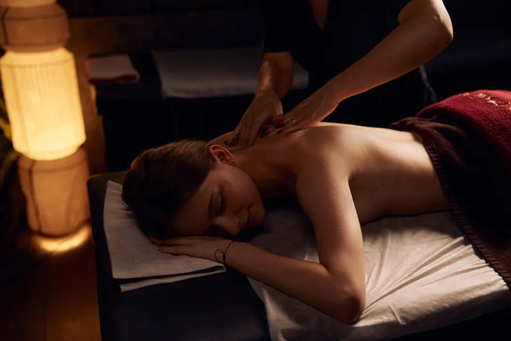
от 30 минут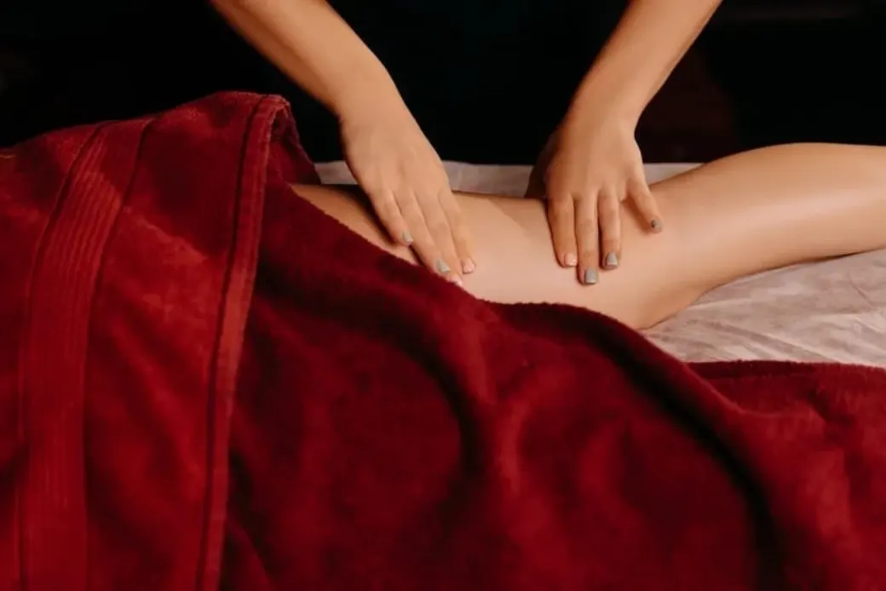
60 минут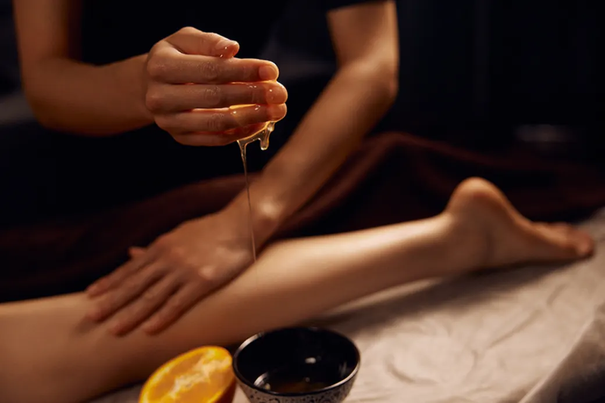
60 минут от 60 минут
от 60 минутЦена и состав подтверждаются при записи. Услуги не являются медицинскими.
КАК ВЫБРАТЬ
Шестнадцать способов сделать паузу
В этом разделе — индивидуальные массажные программы: от коротких локальных сеансов до полноценных ритуалов с маслами, камнями, травами или свечой. Если хочется совместить массаж с пилингом и обёртыванием, посмотрите SPA-программы.
Чуть больше ясности.
Как выбрать массаж?
Начните с формата и длительности. Администратор расскажет о различиях и поможет уточнить ваши пожелания.
Можно ли прийти вдвоём?
В этом разделе цены относятся к индивидуальным процедурам. Совместные посещения собраны в разделе «Для двоих».
БАТУРИНА, 23 / ЕЖЕДНЕВНО 10:00–22:00
Давайте выберем
вашу паузу.
Расскажите, какого отдыха хочется. Уточним программу и удобное время.